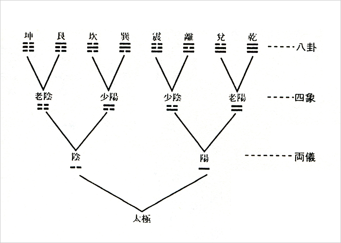

八卦とは
「道は一を生じ、一は二を生じ、二は三を生じ、三は万物を生ず」道徳経42章
大極（タオ）
「宇宙＝太極」が誕生したとき、万物はまだ分化しておらず、あらゆる矛盾や分別を包み込む混沌とした状態にありました。この太極こそが宇宙の正体であり、生まれる前の人間の状態です。それは、老子のいう「道（タオ）」であり、かたちはなく、名前もなく、言葉でも表わすことのできないものです。その太極＝道は、自然の理屈、人間関係の原理として、目には見えないが、いまのわたしたちの人生の根幹にあるものと捉えられます。
陰と陽（両儀）
この太極が動いた時、混沌は『陰（--）』と『陽（ー）』の二元に分化し（両儀）、そのバランスにより宇宙のリズムが形成されました。陽は一般に積極的で強く固いものを指し、陰は消極的で柔らかいものを指します。これは電気でいうとプラスとマイナスの関係であり、あらゆるものは陰と陽の二元的な対応関係によって成立しすることになりました。陰陽はそれぞれ独立したものでなく、陰がなければ陽はなく、陽がなければ陰はありません（互根=相互依存関係）。そして季節が巡るように陰陽のバランスは常に変化しています（消長＝どちらかが盛んになるとどちらかが衰える）。物事を理解し、バランスを保つため、物事はつねにこうした補完関係や対立関係で捉えることが重要です
陰陽のサイクル（四象）
陰陽のバランスは絶えず変動し、陽は変化して陰と結びつき、陰もまた変化して陽と結びつきます。たとえば季節でいえば、冬（老陰）から少しずつ陽が育って春になり（少陽）、さらに陽が強くなると、陰が消滅して夏になり（老陽）、そこから再び陰が生まれて日中の時間が徐々に短くなって秋を迎え（少陰）、陽が死に絶えると再び陰一色の冬（老陰）を迎えます。易はこれを両儀から派生した四象として２本の爻で表します。
さらなる分化——八卦の誕生
この四象にそれぞれ陰陽を加え、8つに分化させると八卦が生まれます。八卦は天、沢、火、雷、風、山、地によって構成され、天地に人の概念を加えることでより精妙な世界の実相を認識しようとしたものです。
八卦は別名小成卦ともいいます。古代中国の帝王である伏羲（ふくぎ）によって考案されたとされていますいますが、真相は明らかではありません。
| 卦名 | 記号 | かたち | 自然象 | 性質 | 方位 | イメージ |
|---|---|---|---|---|---|---|
| 乾（けん） | ☰ | すべて陽 | 天 | 剛健・創造 | 北西 | 父性・リーダーシップ |
| 兌（だ） | ☱ | 二陽が一陰を抑える | 沢 | 喜悦・柔和 | 西 | 少女・楽しみ |
| 離（り） | ☲ | 中が空虚で陽気を発散 | 火 | 明朗・情熱 | 南 | 中女・知性 |
| 震（しん） | ☳ | 二陰の下で陽が発生 | 雷 | 活動・発展 | 東 | 長男・行動力 |
| 巽（そん） | ☴ | 二陽の下に陰が入り込む | 風 | 柔順、拡散 | 南東 | 長女・柔軟性 |
| 坎（かん） | ☵ | 陽を陰が包む | 水 | 陥没、知恵 | 北 | 中男・困難 |
| 艮（ごん） | ☶ | 下の二陰を陽が抑える | 山 | 静止、頑固、障害、安定 | 北東 | 少男・堅実 |
| 坤（こん） | ☷ | すべて陰 | 地 | 受容・柔順 | 南西 | 母性・安定 |
この8種類の卦を上下に組み合わせた64通り（8 x 8 = 64）の六十四卦によって世の中のあらゆる現象を読み解くことができるのです。